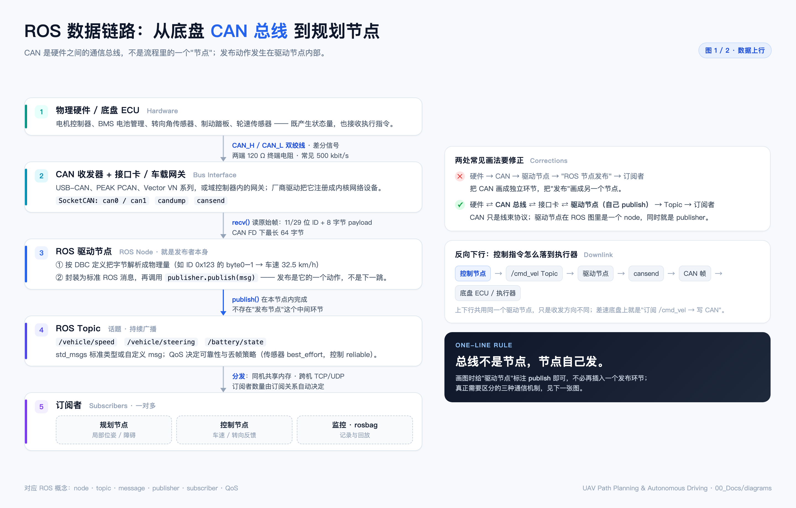
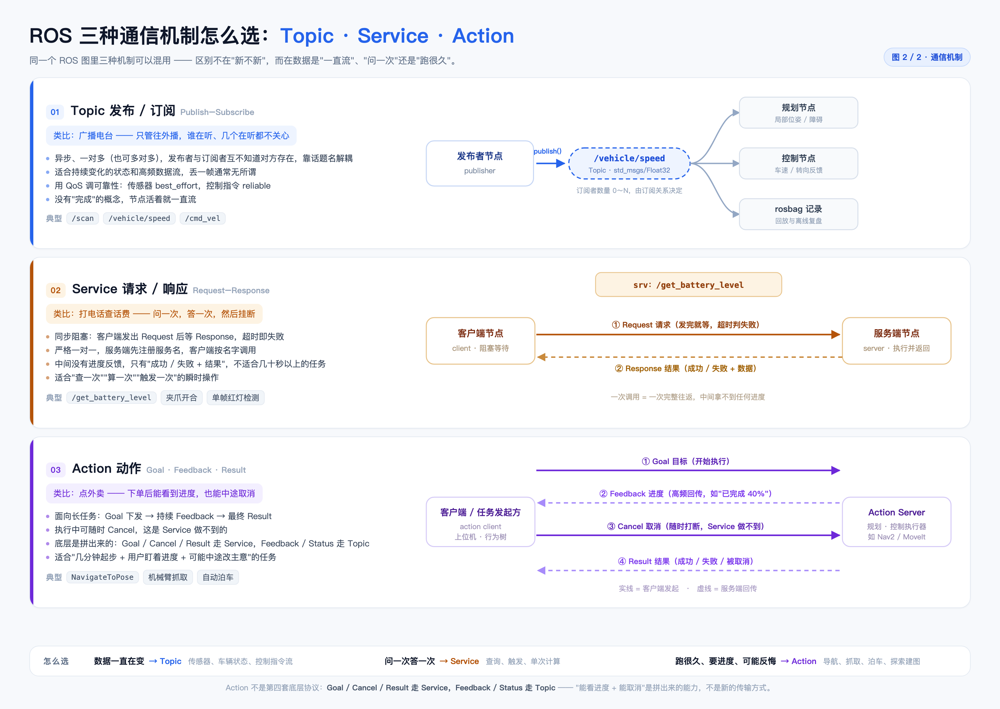

| # | 疑问 | 一句话答案 | 图 |
|---|---|---|---|
| Q1 | CAN_H 和 CAN_L 是什么东西 | 一对双绞线，差分传输的物理载体 | 图 1 |
| Q2 | 差分信号又是什么 | 不看单线对地电压，只看两根线的差值 | 图 1 |
| Q3 | 都并联在一条线上，怎么知道这帧是谁的 | 靠帧头 ID 做内容寻址，硬件过滤器按需取 | 图 1 |
| Q4 | 0 和 1 怎么表达“车速 60 km/h” | 二进制 → 字节 → 按 DBC 切位、乘系数、加偏移 | 图 1 |
| Q5 | 总线会不会把几个传感器拼成一包 | 不会，分时复用，一帧只装一件事 | 图 1 |
| Q6 | 传感器不同步，ROS 消息怎么对齐 | 时间戳 + 软件近似同步 + 硬件对表 + 算法预测 | 文字 |
| Q7 | Topic / Service / Action 三种通信怎么选 | 一直流用 Topic、问一次用 Service、长任务用 Action | 图 2 |
它们是线，不是信号名。CAN 线束里最核心的就是两根线：CAN_H（High）与 CAN_L（Low），工业上做成一对双绞线（互相缠绕）。
为什么要绞：底盘里有电机、DC-DC、火花塞，电磁干扰很强。双绞让两根线在空间上几乎处在同一个干扰场里，干扰会同时、等量地叠加到两根线上（共模），后面一减就抵消了。
拓扑是总线型并联，既不是星形，也不是“菊花链式串联”：
节点 A 节点 B 节点 C
┌──────┐ ┌──────┐ ┌──────┐
│CAN_H ├─────────────┤CAN_H ├─────────────┤CAN_H │
│ │ │ │ │ │
│CAN_L ├─────────────┤CAN_L ├─────────────┤CAN_L │
└──────┘ └──────┘ └──────┘
└── 总线两端各接一个 120 Ω 终端电阻，吸收信号反射 ──┘
差分是一种“看差值”的传输方式，而不是“看某根线对地是多少伏”。CAN 收发器把总线状态编码成两个电平：
| 状态 | 逻辑值 | CAN_H | CAN_L | 差值 H−L | 俗称 |
|---|---|---|---|---|---|
| 显性 Dominant | 0 | ≈ 3.5 V | ≈ 1.5 V | ≈ 2 V | 强、大嗓门 |
| 隐性 Recessive | 1 | ≈ 2.5 V | ≈ 2.5 V | ≈ 0 V | 弱、小声 |
接收端只做一件事：V_diff = CAN_H − CAN_L，≈2 V 读 0，≈0 V 读 1。抗干扰的全部秘密在这段算术里：
电机启动，把整条线束的电位整体抬高 2 V（共模干扰）
单端信号：0 V → 2 V，接收端可能误判
差分信号：H 3.5→5.5 V，L 1.5→3.5 V
差值 5.5 − 3.5 = 2 V ← 一点没变，逻辑 0 依旧是 0
关键在于：CAN 上跑的不是连续模拟量，而是打包好的帧，每帧开头都有 ID。提问里“怎么接收所有传感器的信号”这个说法本身要修正 —— 接收端并不接收“所有”，它只接收自己配置关心的那些 ID。
ID 0x100 = 车速、ID 0x200 = 方向盘转角。发送方不指定收件人，这是广播语义，和以太网“发给某个 MAC / IP”完全不同。ID 回答的是“这是什么数据”，不是“这份数据给谁”。
总线上混杂流过：0x100 车速 | 0x300 车门 | 0x200 转角 | 0x100 车速 ...
│ │ │
域控制器 CAN 控制器：只放行 0x100、0x200（其余在硬件层丢弃，不占 CPU）
↓
ROS 驱动节点：解析 0x100 → 发布 /vehicle/speed
时刻 1：轮速 ECU → ID 0x100，车速 60 时刻 2：转角 ECU → ID 0x200，转角 30° 时刻 3：轮速 ECU → ID 0x100，车速 61（周期 10 ms 又到了）
线上永远是“一帧一帧前后排开”，不存在几家的数据混在同一帧里 —— 这正是 Q5 的答案，也是画架构图时最容易出错的地方。
两个节点同时开口时，逐位比较 ID：谁发显性 0、对方发隐性 1，总线呈现显性，发隐性的那个立刻退出、下次再来，发显性的毫无感知地发完。这叫非破坏性仲裁，所以 ID 数值越小优先级越高 —— 刹车、碰撞这类安全帧的 ID 一定排在最前面，永远不会被娱乐系统的信号卡住。
误解一：CAN 是主从轮询。实际是多主（multi-master）：任何节点只要总线空闲就能发起，不需要主机点名，冲突由仲裁自然化解。
误解二：ID 越小越不重要。正好相反 —— ID 越小优先级越高，所以安全相关帧（刹车、碰撞）会被分配最小的 ID，以免被娱乐系统的流量挡住。
分四步，缺一不可：物理量 → 整数 → 二进制 → 按 DBC 切位 → 加上帧头。
| 步骤 | 做什么 | 例子 |
|---|---|---|
| ① | 物理量 → 整数 | 60 km/h 按系数 1 km/h / bit 变成整数 60 |
| ② | 整数 → 二进制 | 60 = 0011 1100，正好一个字节 |
| ③ | 字节 → 信号 | 占哪几位由 DBC 规定：起始位、长度、字节序、系数、偏移 |
| ④ | 信号 → 帧 | 拼上 ID、DLC、CRC，形成可在线上传输的帧 |
[SOF 1b] [仲裁段 ID 11b + RTR] [控制段 DLC 4b] [数据段 0~8 B] [CRC 15b] [ACK] [EOF 7b]
↑ 这是什么数据 ↑ 有几个字节 ↑ 真正的数值
BO_ 256 VehicleStatus: 8 ECU_Wheel
SG_ VehicleSpeed : 0|16@1+ (0.01,0) [0|300] "km/h" DomainController
↑起始位 ↑长度 ↑字节序 ↑系数 ↑偏移 ↑范围 ↑单位
所以发送端并不是“把电信号变成 60”，而是把 60 变成一串 0/1，按约定塞进固定的位置；接收端拿同一份 DBC 反向拆开，才还原出 60。没有 DBC，那 8 个字节对人类和程序都只是一团二进制。
60 → 0x003C（16 位信号） Intel（小端，DBC 写 @1）：byte0 = 0x3C, byte1 = 0x00 Motorola（大端，DBC 写 @0）：byte0 = 0x00, byte1 = 0x3C 字节序填错 → 同一份二进制被读成 15360 或 0
图 1 里那句“ID 0x123 的 byte0–1 → 车速 32.5 km/h”，用的就是这种“跨两个字节拼一个物理量”的写法；一旦字节序与发送端不一致，数值就会翻成大数或归零，这是联调时最常见的低级故障。
| 边界 | 含义 |
|---|---|
| 经典 CAN 8 字节 | 一帧最多 8 B；CAN FD 扩到 64 B，且数据段可提速 |
| 控制与状态 | 车速、转角、档位、故障码 —— 这类小数据才是它的主场 |
| 不走图像 | 相机、点云走车载以太网 / LVDS / GMSL；500 kbit/s 连一帧小图都塞不下 |
这是画图时最容易脑补错的地方。正确的心智模型是分时复用的广播，像微信群：谁有话说谁发一条，不存在“把几个人的话合成一句”。
物理层： [0x100 车速] [0x200 转角] [0x300 车门] [0x100 车速] ...
↑独立帧 ↑独立帧 ↑独立帧 ↑独立帧
接收端： 按 ID 分别更新各自的变量，互不干扰
vehicle_speed = 60
steering_angle = 30
融合点： 发生在订阅端 / 算法层（ROS 节点里），不在总线上
由此得到三条推论，直接决定架构图怎么画：
| # | 推论 | 画法上的后果 |
|---|---|---|
| 1 | CAN 不是流程里的节点 | 画在箭头上（线束 + 收发器），不要画成方框 |
| 2 | 驱动节点是“多路解复用器” | 一个节点、多个 publisher、多个独立 Topic |
| 3 | 融合是订阅端的事 | 规划节点同时订阅两个 Topic，在代码里组合 |
先把事实摆清楚：轮速约 100 Hz（10 ms）、IMU 约 200 Hz（5 ms）、相机约 30 Hz（33 ms），相位天然错开，且永远不会自动对齐。工程上是六层手段叠加使用，从下往上：
CAN 分时复用决定了任一时刻总线上只有一帧。同步不是 CAN 的职责，别指望在总线层解决。
驱动节点解析完立刻打戳，优先用采集时刻（ECU / 传感器自己打的），退而求其次才是接收时刻。这是跨节点对齐的唯一契约 —— 所以 ROS 消息几乎都带 header，不是装饰。
ApproximateTimeSynchronizer 在缓冲区里找时间戳最接近的一组（容差常设 10 ms），凑齐才触发回调。代价是引入延迟：容差越大越容易配对，也越滞后；ExactTime 要求完全相等，实际几乎命不中。
这一层解决的是“大家的表是不是同一块表”，否则第 2、3 条都无从谈起：
| 手段 | 做什么 | 精度 |
|---|---|---|
| PPS 秒脉冲 | GNSS / RTK 在整秒发脉冲，全网设备同时“对表” | µs 级 |
| PTP（IEEE 1588） | 走车载以太网，把全网时钟同步 | µs 级 |
| 硬件触发 | 域控制器发 Trigger，强制相机曝光、LiDAR 扫描落在同一微秒 | µs 级 |
卡尔曼滤波 / ESKF 做两件事：用 IMU 角速度、加速度预测 T₁→T₂ 之间怎么动；用最新观测更新修正。离散、异步的观测由此被拼成连续的状态估计 —— 这才是“融合”的真正含义。
LiDAR 转一圈 100 ms，这期间车已经往前走了，整帧点云本身就是歪的。要用同时段的 IMU + 轮速把点云“拉回”同一参考时刻；相机的高速运动模糊、卷帘快门畸变同理。
| 层 | 解决什么 | 典型手段 | 量级 |
|---|---|---|---|
| 物理层（CAN） | 不解决，只保证帧完整 | 差分 + 仲裁 + CRC | — |
| 消息层 | 这份数据“几点发生” | header.stamp | ms |
| 软件层 | 哪几条算“同一时刻” | message_filters | 10 ms |
| 硬件层 | 大家的钟是不是一块钟 | PPS / PTP / 硬触发 | µs |
| 算法层 | 用运动模型补空隙 | KF / ESKF 预测-更新 | 连续 |
| 感知层 | 一帧数据自身的畸变 | Deskewing 运动补偿 | 帧内 |
① 优先用采集时刻，拿不到才退到接收时刻，并在消息里注明；② 先对表再谈时间戳 —— 没有 PTP / PPS 时，rosbag 回放配合 use_sim_time 会让 wall clock 直接失效；③ 时间戳一旦发出就是契约，下游只读不改，需要插值就在订阅端做，不要回写 header。
这张图回答 Q1～Q5。它是“底盘 ECU → 总线 → 接口卡 → 驱动节点 → Topic → 订阅者”这条链路的定稿，也是把两个常见错法纠正过来的版本。

| 图上位置 | 对应疑问 | 画法要点 |
|---|---|---|
| 第 2 框 CAN 收发器 + 接口卡 | Q1 / Q2 | 总线在链路上，不在流程节点里；can0 是软件看见的入口 |
| 第 3 框 ROS 驱动节点 | Q3 / Q4 | 标注“就是发布者本身”：按 DBC 解析 → 封装 msg |
publish() 那条箭头 | Q5 | 发布是节点内的一次函数调用，没有“发布节点”这一跳 |
| 第 4 框 Topic | Q3 | 多个独立 Topic，不是一个“大杂烩”消息 |
| 右侧“反向下行” | — | 控制指令原路返回：/cmd_vel → 驱动节点 → cansend |
这张图回答“规划告诉控制往左转，该用哪种通信”，以及“上位机让系统导航到 A 点，又该用哪种”。同一个 ROS 图里三种机制可以混用，区别不在新旧，而在数据是“一直流”“问一次”还是“跑很久”。

| 机制 | 类比 | 判据 |
|---|---|---|
| Topic | 广播电台 | 数据一直在变，丢一帧无所谓；异步、一对多 |
| Service | 打电话查话费 | 问一次答一次，中间没有进度；同步阻塞 |
| Action | 点外卖 | 跑得久、要看进度、可能中途反悔 |
① “规划让控制左转”用 Topic 就行（/cmd_vel 这类持续指令流），不需要 Service；② “上位机下发一次导航任务”用 Action（Nav2 的 NavigateToPose），不是 Service —— 因为要进度、要能取消。
| # | 容易画错 | 正确做法 |
|---|---|---|
| 1 | 把 CAN 画成一个方框节点 | 它是链路与介质，应画在箭头上（线束 + 收发器） |
| 2 | 在驱动节点后面再加一个“发布”环节 | publish 是节点自己的动作，箭头标注函数名即可 |
| 3 | 在总线上画“数据融合” | 融合只发生在订阅端 / 算法层，总线上永远一帧一件事 |
| 4 | 用一个 Topic 装下所有传感器 | 一个驱动节点、多个 publisher、多个独立 Topic |
| 文件 | 说明 |
|---|---|
assets/2026-11-CAN链路-Q1-Q5-图1-CAN链路.png | 图 1，回答 Q1–Q5，2880 × 1840 |
assets/2026-11-CAN链路-Q1-Q5-图2-通信机制.png | 图 2，回答 Q7，3000 × 2128 |
assets/_make_can_chain.html | 图 1 源文件（单文件 HTML，无外部依赖） |
assets/_make_ros_comms.html | 图 2 源文件 |
2026-11-CAN总线到ROS-读图答疑-Q1-Q7.md / .pdf | 本笔记的两个版本：Markdown 版便于检索摘抄，PDF 版即本文件 |
CHROME="/Applications/Google Chrome.app/Contents/MacOS/Google Chrome" cd "assets" # 在本笔记所在目录执行 # 改完 HTML 源后，重出 2× PNG "$CHROME" --headless=new --disable-gpu --hide-scrollbars \ --force-device-scale-factor=2 --window-size=1440,920 \ --screenshot="2026-11-CAN链路-Q1-Q5-图1-CAN链路.png" "file://$PWD/_make_can_chain.html" "$CHROME" --headless=new --disable-gpu --hide-scrollbars \ --force-device-scale-factor=2 --window-size=1500,1064 \ --screenshot="2026-11-CAN链路-Q1-Q5-图2-通信机制.png" "file://$PWD/_make_ros_comms.html" # Markdown/HTML 排版版重出 PDF（A4，无页眉页脚） "$CHROME" --headless=new --disable-gpu --no-pdf-header-footer \ --print-to-pdf="2026-11-CAN总线到ROS-读图答疑-Q1-Q7.pdf" \ "file://$PWD/_make_note_pdf.html"
正文用宋体（Songti SC）排 10.4pt / 1.78 倍行距，标题与表格用苹方；A4 满版，每页固定页眉页脚与页码，图表统一编号。内容与 Markdown 版一致，区别只在阅读体验：Markdown 适合检索与摘抄，PDF 适合从头读到尾。若两者出现不一致，以本 PDF 的内容为准（它最后更新）。